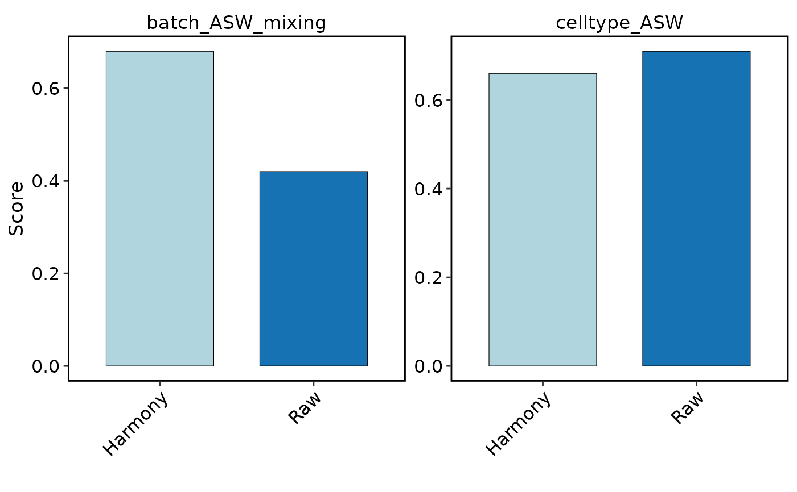
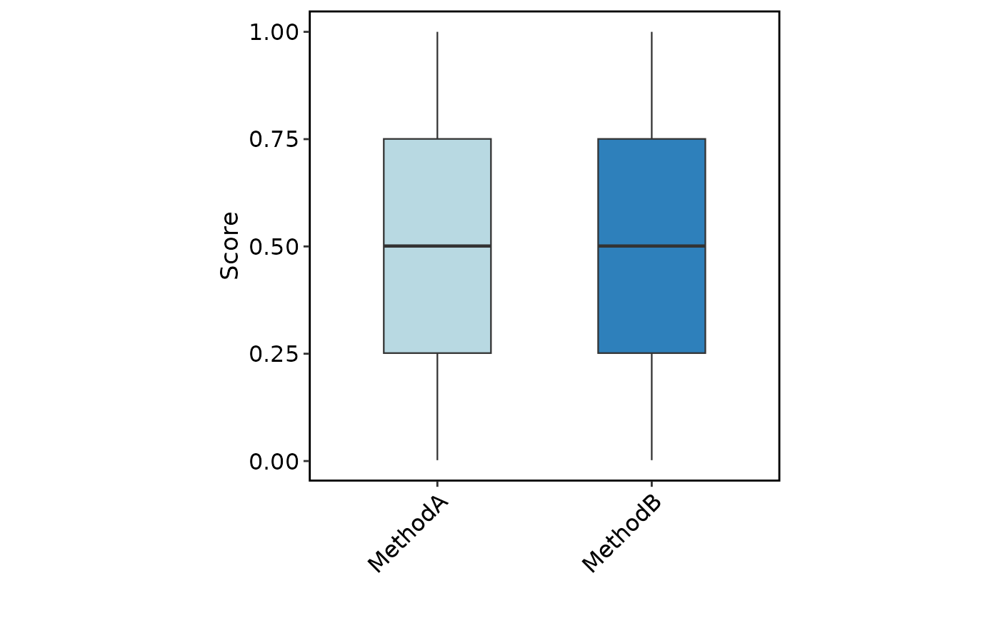

Visualize a spatial_benchmark_result from RunSpatialBenchmark(), or a
summary data.frame. Spatial results default to a publication-oriented
overview that pairs clustering quality with runtime and peak-memory
efficiency. For scRNA integration metrics such as LISI, use
IntegrationBenchmarkPlot().
Usage
SpatialBenchmarkPlot(
object = NULL,
data = NULL,
features = NULL,
metrics = NULL,
tool_name = NULL,
reduction = NULL,
plot_type = c("auto", "overview", "quality", "efficiency", "heatmap", "feature",
"boxplot", "bar", "funkyheatmap"),
sort_by = c("quality", "method", "runtime", "memory"),
show_values = TRUE,
show_status = TRUE,
resource_scale = c("auto", "linear", "log10"),
plot_boxplot = TRUE,
boxplot_jitter = FALSE,
combine = TRUE,
nrow = NULL,
ncol = NULL,
byrow = TRUE,
pt.size = NULL,
pt.alpha = 1,
palette = "Chinese",
palcolor = NULL,
theme_use = "theme_scop",
theme_args = list(),
verbose = TRUE,
...,
srt = NULL
)Arguments
- object
A
Seuratobject.- data
Optional
spatial_benchmark_result/benchmark_resultobject or summarydata.framecontaining at leastmetricandvalue, and optionallymethod,workflow, anddirection.- features
Metadata columns containing per-cell benchmark scores.
- metrics
One or more summary metric names to visualize. Default is
NULL, which uses all available summary metrics.- tool_name
Tool entries created by benchmark-related workflows. This can be a character vector. For per-cell metrics, benchmark columns are resolved from tool entries that contain
colnames; for summary metrics, entries containingsummaryormetrics$summaryare used.- reduction
Dimensional reduction used for per-cell feature plots. Default is
NULL, which uses the reduction stored intool_namewhen available, otherwiseDefaultReduction().- plot_type
Plot type.
"overview","quality","efficiency", and"heatmap"consume spatial benchmark results. Existing"feature","boxplot","bar", and"funkyheatmap"modes remain supported.- sort_by
Method ordering for spatial benchmark plots.
"quality"sorts by the mean selected quality metric; other choices sort by method, runtime, or peak memory.- show_values
Whether to print raw metric values on quality and heatmap panels.
- show_status
Whether the overview should add a status strip for failed, unavailable, or timed-out methods.
- resource_scale
Resource-axis transformation.
"auto"independently uses log10 for runtime or memory when positive values span at least tenfold.- plot_boxplot
Whether to add the summary boxplot when per-cell metrics are shown.
- boxplot_jitter
Whether to overlay jittered points on the boxplot.
- combine, nrow, ncol, byrow
Combine plots with patchwork.
combine = FALSEreturns a list of ggplots.- pt.size, pt.alpha
Point size and transparency.
pt.size = NULLscales withsqrt(n)(minimum0.3). Rasterized points keep at least a two-pixel radius atraster.dpi = c(512, 512)and scale withraster.dpi.- palette, palcolor
Palette name (thisplot::show_palettes) or custom colors.
- theme_use, theme_args
Theme name or function, plus extra theme arguments.
- verbose
Whether to print the message. Default is
TRUE.- ...
The message to print.
- srt
Deprecated alias for
object; supply exactly one of the two. It will be removed in scop 1.0.0.
Value
A ggplot, patchwork plot, or funkyheatmap object depending on the selected
mode. If combine = FALSE in per-cell mode, a named list of plots is
returned.
Examples
Restored example output generated on 2026-10-10 from SCOP 151e7134c. These historical examples have not been revalidated against the current release. Current usage and arguments are documented above.
metrics_df <- data.frame(
method = c("Raw", "Raw", "Harmony", "Harmony"),
metric = c("batch_ASW_mixing", "celltype_ASW", "batch_ASW_mixing", "celltype_ASW"),
value = c(0.42, 0.71, 0.68, 0.66)
)
SpatialBenchmarkPlot(
data = metrics_df,
plot_type = "bar"
)

data("pbmcmultiome_sub", package = "scop")
pbmcmultiome_sub[["MethodA_batch_LISI"]] <-
seq_len(ncol(pbmcmultiome_sub)) / ncol(pbmcmultiome_sub)
pbmcmultiome_sub[["MethodB_batch_LISI"]] <-
rev(pbmcmultiome_sub[["MethodA_batch_LISI", drop = TRUE]])
SpatialBenchmarkPlot(
pbmcmultiome_sub,
features = c("MethodA_batch_LISI", "MethodB_batch_LISI"),
plot_type = "boxplot"
)
